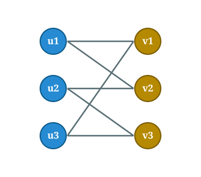
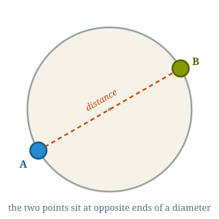
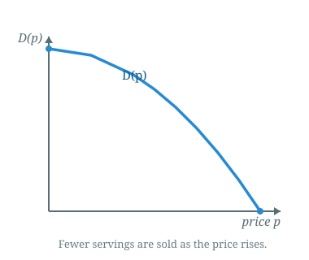
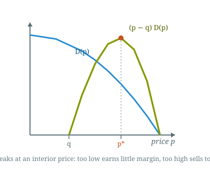
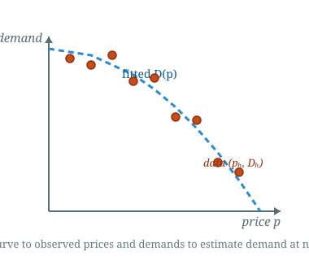
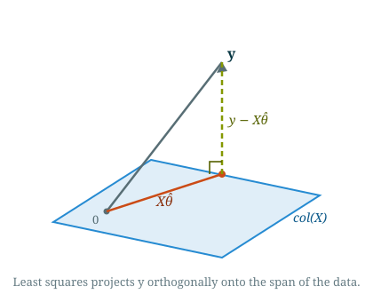
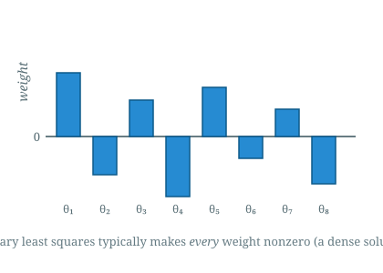
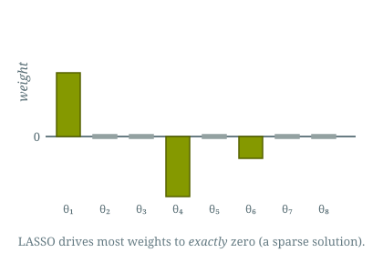
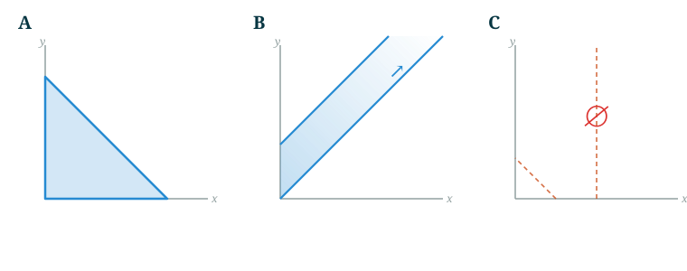

Introduction to Optimization
CO 250
Lecture 4
Kevin Shu
Lecture Outline
- Graph problems review
- Nonlinear Programming
- Return to Linear Programming
Graphs
Graphs
A graph $G = (V,E)$ consists of a set of `vertices' $V$ and a set of `edges' $E$.
Formally, an edge is an unordered pair $\{i,j\}$, where $i$ and $j$ are in the vertex set.
Graphs can be visualized as a picture where the vertices are points, and the edges are lines.

Bipartite Matching
Bipartite Matching
A bipartite graph is a graph whose vertex set can be divided into two disjoint parts $V = V_1 \cup V_2$ with $V_1 \cap V_2 = \varnothing$, and every edge $e \in E$ consists of one element from $V_1$ and one element from $V_2$.

Bipartite Matching
A matching in a graph is a collection of edges in that graph so that no two edges in the collection share a vertex.

A maximum matching is a matching with as many edges as any other matching. A perfect matching is a matching where every vertex has a matched vertex.
Bipartite Matching
An ILP Formulation
How can we model maximum bipartite matching as an integer program?
Bipartite Matching
Decision variables
What should the variables be?
For each edge, we need to decide whether it is part of the matching or not.
For each edge $\{i,j\}$, introduce a variable $x_{ij}$ that is 1 if that edge is in the matching and 0 otherwise.
Bipartite Matching
Constraints
Variables correspond to edges, constraints correspond to vertices.
For every vertex, there can be at most one incident edge. For each $i \in V$, \[ \sum_{j : \{i,j\} \in E}x_{ij} \le 1. \]
Bipartite Matching
Objective
We want as many edges in the matching as possible.
To count the number of edges in the matching, sum up the indicator variables. \[ \max \sum_{\{i,j\} \in E}x_{ij} \]
Bipartite Matching
Assembling
| max | $\sum_{\{i,j\} \in E}x_{ij}$ | |
| such that | $\sum_{j : \{i,j\} \in E}x_{ij} \le 1$ | for each $i \in V$ |
| $0 \le x_{ij} \le 1$ | ||
| $x_{ij} \in \Z$ |
It turns out that the integrality constraints are not necessary! Matching can be solved with an LP.
Bipartite Matching
A Concrete Example
Consider this bipartite graph with parts $\{u_1, u_2, u_3\}$ and $\{v_1, v_2, v_3\}$.
Its edges are \[ E = \{\, u_1v_1,\ u_1v_2,\ u_2v_2,\ u_2v_3,\ u_3v_1,\ u_3v_3 \,\}. \]
We write $x_{ij}$ for the variable of edge $u_iv_j$, so there are six variables.

Bipartite Matching
A Concrete Example
One constraint per vertex says each vertex is used at most once:
| max | $x_{11} + x_{12} + x_{22} + x_{23} + x_{31} + x_{33}$ | |
| such that | $x_{11} + x_{12} \le 1$ | ($u_1$) |
| $x_{22} + x_{23} \le 1$ | ($u_2$) | |
| $x_{31} + x_{33} \le 1$ | ($u_3$) | |
| $x_{11} + x_{31} \le 1$ | ($v_1$) | |
| $x_{12} + x_{22} \le 1$ | ($v_2$) | |
| $x_{23} + x_{33} \le 1$ | ($v_3$) | |
| $0 \le x_{ij} \le 1, \quad x_{ij} \in \Z$ |
An optimal solution is $x_{11} = x_{22} = x_{33} = 1$ (all others $0$), the perfect matching $\{u_1v_1, u_2v_2, u_3v_3\}$.
Bipartite Matching
Nonlinear Programming
Nonlinear Programming
We have covered linear programming and integer programming .
Nonlinear programming is everything else!
Nonlinear Programming
Arnold and Beth are in a circular room and they want to stand as far apart as possible.
Each person gets to choose a location in the room $(x_A, y_A)$ and $(x_B, y_B)$. Their goal is to maximize the distance between these points: \[ \sqrt{(x_A - x_B)^2 + (y_A - y_B)^2} \]
These choices need to stay in the disk $\{(x,y) : x^2+y^2\le 1\}$.
Nonlinear Programming
| max | $\sqrt{(x_A-x_B)^2 + (y_A - y_B)^2}$ |
| such that | $x_A^2+y_A^2 \le 1$ |
| $x_B^2+y_B^2 \le 1$ |

Nonlinear Programming
| min | $f(x)$ |
| such that | $g_1(x) \le 0$ |
| $g_2(x) \le 0$ | |
| $\dots$ | |
| $g_k(x) \le 0$ | |
| $x \in \R^n$ |
$f$ and each $g_i$ is some (possibly nonlinear) function.
The $\le$ can also be $\ge$, min can be max, etc. Each change amounts to taking the negative of the objective/constraint function.
Nonlinear Programs
Example: Restaurant Planning Revisited
In an earlier lecture, we discussed the planning problem for a restaurant. Let's say that the restaurant also gets to decide their prices.
Let's say that the restaurant needs to just sell one food item, and it wants to determine the price of the food item.
To model this, we need to know the demand function that tells us how much food the restaurant sells if it sets the price of that item to $p$.
Nonlinear Programs
Example: Restaurant Planning Revisited
Suppose that for each $p \in \R_{\ge 0}$, $D(p)$ is how many servings the restaurant can sell if it sets the price of the food to $p$.

What is the objective here?
Nonlinear Programs
Example: Restaurant Planning Revisited
If the food item costs $c$ to make, then the total profit from selling one food item at price $p$ is $p-c$.
Then the total amount that is sold is $D(p)$, so the total profit is
\[ (p-c)D(p). \]

Nonlinear Programs
Example: Restaurant Planning Revisited
Let us now return to the situation in which a restaurant has 2 food items that it can sell, and 3 ingredients with which to make those items.
The restaurant will use chicken, rice and vegetables as ingredients to produce either chicken bowls or vegetable bowls.
In the earlier lecture, we talked about a multiday planning model, but for now, let's just focus on one day at a time.
Nonlinear Programs
Example: Restaurant Planning Revisited
What are the variables for this model?
Nonlinear Programs
Example: Restaurant Planning Revisited
Objective: Maximize total profit: \[ \sum_i p_if_i - \sum_j c_j r_j. \]
First term is the total profit from selling $f_i$ of food $i$ at price $p_i$, and second term is the cost of buying ingredients.
Nonlinear Programs
Example: Restaurant Planning Revisited
Constraints: Need to buy enough of each ingredient \[ \sum_{i} n_{ji} f_i \le r_j \]
Here $n_{ji}$ is how much of ingredient $j$ is needed to make food $i$.
Also sales limited by demand. \[ f_i \le D_i(p_i). \]
Here, $D_i$ is the demand function of food $i$.
Nonlinear Programs
Example: Restaurant Planning Revisited
Overall, the problem is| max | $\sum_i p_if_i - \sum_j c_j r_j$ | |
| such that | $\sum_{i} n_{ji} f_i \le r_j$ | for each $j$ |
| $f_i \le D_i(p_i)$ | for each $i$ |
This problem is nonlinear because the objective involves the term $p_i f_i$, which is quadratic in the decision variables. Also, the constraints involve the possibly nonlinear constraint that $f_i \le D(p_i)$.
Note that if the $p_i$ are fixed instead of being decision variables, then this is a linear program.
Nonlinear Programs
Example: Restaurant Planning Revisited
What if we don't know the demand function?
Need to use data; say that we look at similar restaurants that have different prices for their food, and how much demand those food items get.
\[\mathcal{D} = \{(p_i, D_i) : i = 1, \dots, k\}\]

We want to know what the demand is when $p$ is an intermediate value.
Regression Analysis
A basic problem in data science is to find a function which fits some data.
There are 3 components to such a regression problem: a function class for the model, the data, and a loss function that measures how well the function fits the dataset.
Classically, we study linear regression (least squares), but modern machine learning is primarily focused on fitting nonlinear functions.
Linear Regression
Given a dataset $\mathcal{D}$, \[ \mathcal{D} = \{(x_i, y_i) : i = 1, \dots, D\} \subseteq \R^n \times \R, \]
the linear regression problem is to find a linear function of the form $\langle \theta, x\rangle$ that minimizes \[ \sum_{i=1}^D (\langle \theta, x_i\rangle - y_i)^2 \] Here, $\theta \in \R^n$.
Linear Regression
Geometric Interpretation

Sparse Linear Regression
A common issue with linear regression solutions is that they tend to make all of the weights nonzero.

What if we want a good linear model, but one with very few weights being nonzero?
Sparse Linear Regression
Let $\|\theta\|_0$ be the number of nonzero entries of the vector. E.g. $\|(1,1,0)\|_0 = 2$.
The sparse linear regression problem is
| min | $\sum_{i=1}^D (\langle \theta, x_i\rangle - y_i)^2$ | |
| such that | $\|\theta\|_0 \le k$ |
This problem is hard! Requires combinatorial search.
LASSO (constrained formulation)
Let $\|\theta\|_1$ be $\sum_{i=1}^n |\theta_i|$. E.g. $\|(1,1,0)\|_1 = 2$.
The (constrained formulation of LASSO) is given by
| min | $\sum_{i=1}^D (\langle \theta, x_i\rangle - y_i)^2$ | |
| such that | $\|\theta\|_1 \le k$ |
LASSO is more often written in its `penalty formulation', which is just to minimize $\sum_{i=1}^D (\langle \theta, x_i\rangle - y_i)^2 + \lambda \|\theta\|_1$ for some $\lambda \in \R$.
We will talk about how to solve this kind of (convex) problem later.
LASSO (constrained formulation)
Unlike least squares, LASSO tends to set most weights exactly to zero, recovering a sparse model.

Only a few features (here $\theta_1, \theta_4, \theta_6$) are used; the rest are dropped.
Linear Programming Again
Linear Programming Again
A linear program (LP) is an optimization problem whose objective is a linear function and whose feasible set is the set of solutions to some linear inequality.
| min | $c^{\intercal} x$ |
| such that | $Ax \le b$ |

Linear Programming Again
Feasible regions for linear programs are polytopes.

Linear Programming Again
Polytopes can come in various different shapes, and we can read off various features of the polytope from its linear inequality description.

| (1) | $x \ge 0$ |
| $y \ge x$ | |
| $y \le x + 2$ |
| (2) | $x + y \le 1$ |
| $x \ge 2$ | |
| $y \ge 0$ |
| (3) | $x \ge 0$ |
| $y \ge 0$ | |
| $x + y \le 3$ |
Which polytope corresponds to which system of inequalities?
Answer: A ↔ (3), B ↔ (1), C ↔ (2).
A Coarse Classification of Polytopes
Every polytope comes in one of three shapes: it can be empty, it can be nonempty compact, or it can be unbounded.
A polytope is empty if there are no points in it, e.g. \[ \{(x,y) : x+y \le 1, x \ge 1, y \ge 1\}. \]
A polytope is unbounded if there are vectors which are arbitrarily long in the set. \[ \{(x,y) : x+y \ge 1, x \ge 1, y \ge 1\}. \] Note that every vector of the form $(x,0)$ with $x \ge 1$ is in this set.
A polytope is compact if it is neither empty or unbounded.
We will discuss these different examples in greater detail next lecture.